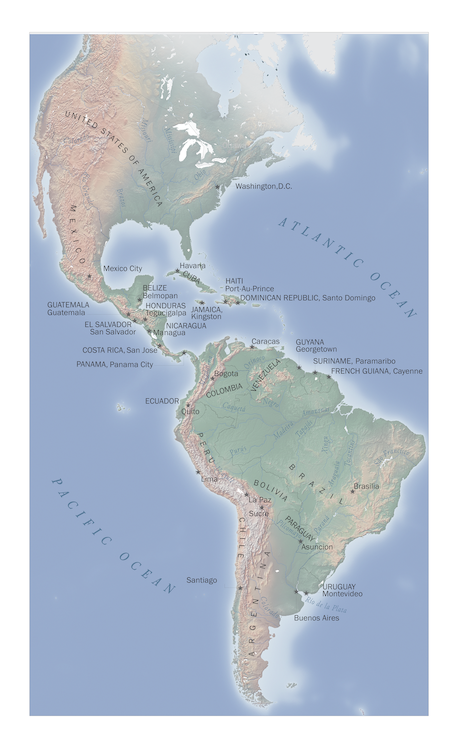

1 / 10

2 / 10

3 / 10

4 / 10

5 / 10
6 / 10

7 / 10
8 / 10

9 / 10

10 / 10

Published in: Postcards from the Borderlands
Author: David Mould
Open Books, 2020
Ana Mojica Myers, Benjamin
Bryan, Ana Stover, and Hunter Uhl
">
Author: David Mould
Open Books, 2020
Ana Mojica Myers, Benjamin
Bryan, Ana Stover, and Hunter Uhl
">
continent. Published in: Latin America and the Caribbean:
An environment and
Development Approach
Author: Brad Jokisch
Rowman & Littlefield Publishers, 2023
">
An environment and
Development Approach
Author: Brad Jokisch
Rowman & Littlefield Publishers, 2023
">
Radama’s exploratory mission in 1823
Published in: Mission to Madagascar:
The Sergeant, the King, and the Slave Trade
Author: David Mould
Blackwater Press, 2023
">
Published in: Mission to Madagascar:
The Sergeant, the King, and the Slave Trade
Author: David Mould
Blackwater Press, 2023
">